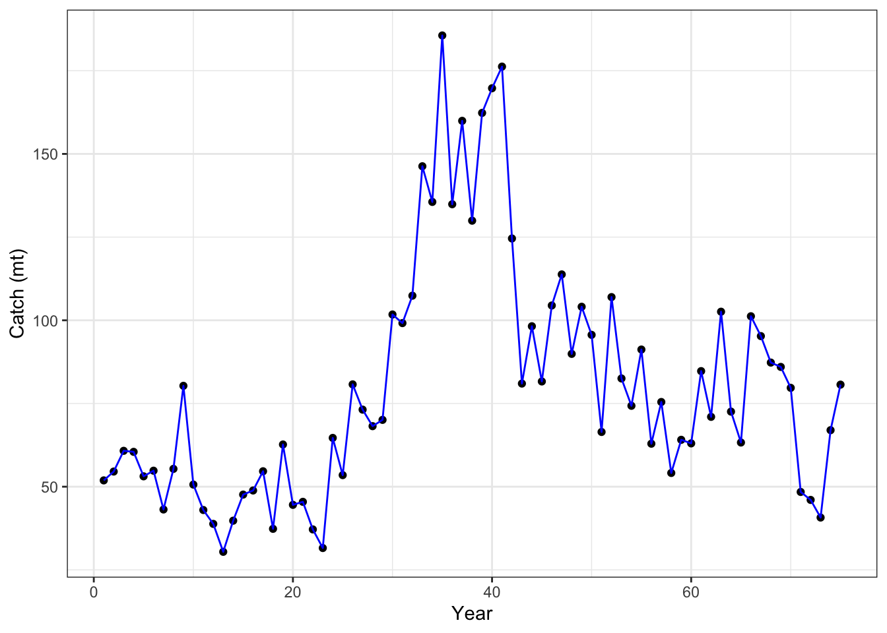
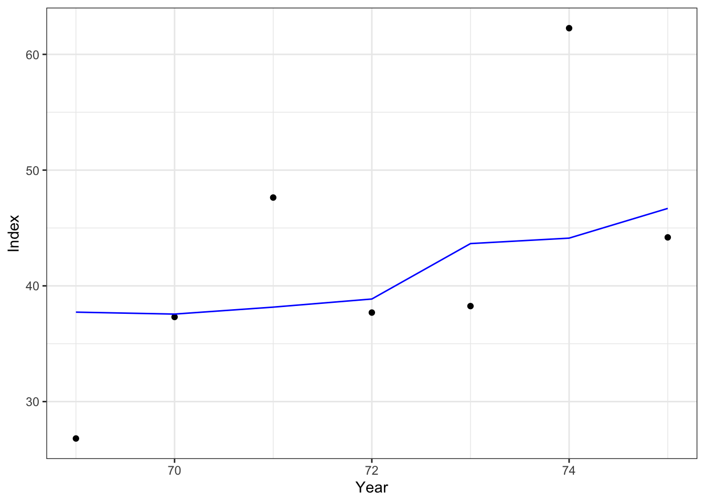
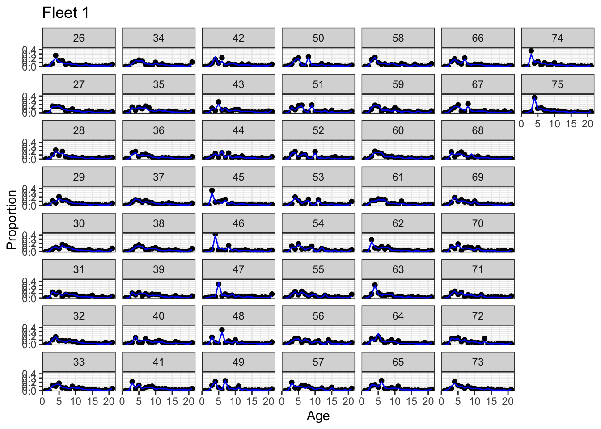
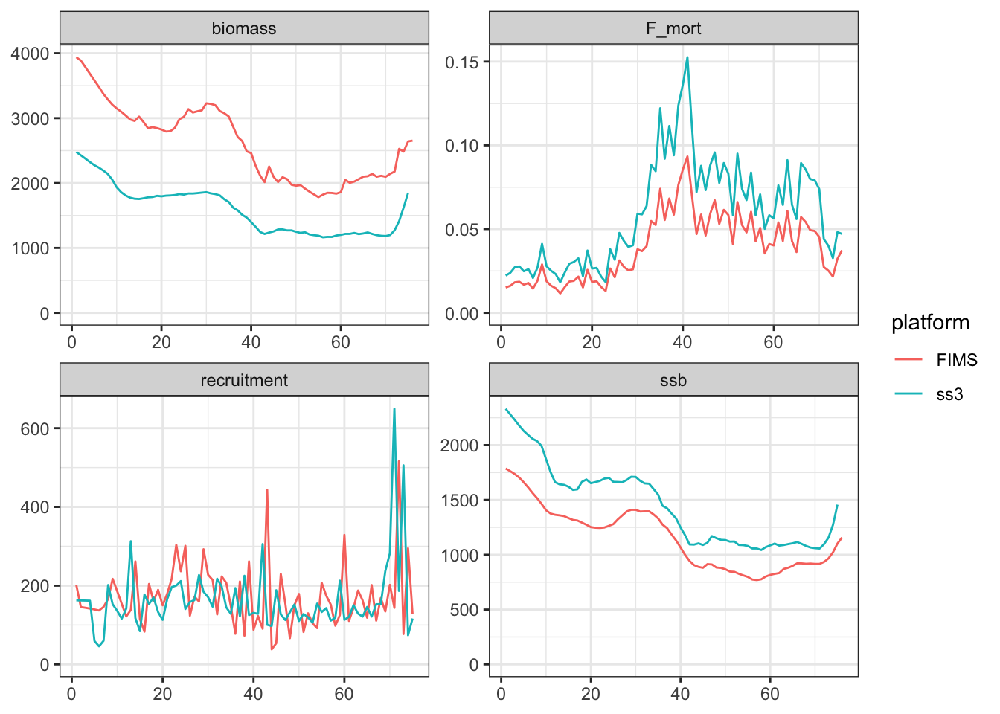

Opakapaka is one of seven species managed as a complex using a surplus production model (JABBA), however, as a supplement to the stock assessment, we developed a single-species SS3 model for Opaka. However, this model lacked age composition data (necessary for FIMS), so I used a model generated with {ss3sim} that is based on Opaka life-history, mimics the fleets and years of data available, and is conditioned on estimated fishing mortality from the Opaka SS3 model developed for the assessment report. This allowed us to simulate age composition data for the fishery and survey instead of converting length and weight composition data into age compositions. Some differences between the ss3sim model and the full SS3 model include:
Removed growth platoons
Simplified to 2 fleets, one fishery and one survey, instead of 2 fishing and 2 survey fleets. One reason is because the second survey fleet has a dome-shaped selectivity.
All age composition was simulated, currently we collect weight composition data from the commercial fishery and length data from the survey.
Initial depletion estimation was removed.
Script that sets up and runs the model
Note: for more complete code, see “./content/PIFSC-opakapaka.r”.
# copy input data to use as basis for resultsresults_frame <- age_frame@dataresults_frame$expected <-NA# convert date string to numeric year# I'm doing this differently bc my years are 1-75 not the typical yearresults_frame <- results_frame |>tidyr::separate(col = datestart, into =c("year", "temp1", "temp2"), sep ="-", remove =FALSE) |>dplyr::select(-c(temp1, temp2)) |>dplyr::mutate(year =as.integer(year))# add expected index to data frameresults_frame$expected[results_frame$type =="index"& results_frame$name =="fleet2"] <- report$exp_index[[2]]# add estimated catch to data frameresults_frame$expected[results_frame$type =="landings"& results_frame$name =="fleet1"] <- report$exp_catch[[1]]# add estimated age comps to data framefor (fleet in1:2) {# copy Cole's approach to rescaling expected comps to proportions x1 <-matrix(report$cnaa[[fleet]], ncol = nages, byrow =TRUE) x1 <- x1 /rowSums(x1)dimnames(x1) <-list(year = years, age = ages) x1 <- reshape2::melt(x1, value.name ="paa") |> dplyr::mutate(type ="age", name =paste0("fleet", fleet))# add expected proportions into results_frame results_frame <-# add paa for age comps (will be NA for all other types) dplyr::left_join(x = results_frame, y = x1) |># replace value column with paa for age data within this fleet (when not NA) dplyr::mutate(expected = dplyr::case_when(is.na(paa) ~ expected, TRUE~ paa)) |> dplyr::select(-paa) # remove temporary paa column}
Joining with `by = join_by(type, name, age, year)`
Joining with `by = join_by(type, name, age, year)`
Catch fit
Code
results_frame |> dplyr::filter(type =="landings"& value !=-999) |>ggplot(aes(x = year, y = value)) +geom_point() +xlab("Year") +ylab("Catch (mt)") +geom_line(aes(x = year, y = expected), color ="blue") +theme_bw()

Index fit
Code
results_frame |> dplyr::filter(type =="index"& value !=-999&!is.na(expected)) |>ggplot(aes(x = year, y = value)) +geom_point() +xlab("Year") +ylab("Index") +geom_line(aes(x = year, y = expected), color ="blue") +theme_bw()

Age comp fits
Code
# fleet 1 results_frame |> dplyr::filter(type =="age"& name =="fleet1"& value !=-999) |>ggplot(aes(x = age, y = value)) +# note: dir = "v" sets vertical direction to fill the facets which# makes comparison of progression of cohorts easier to seefacet_wrap(vars(year), dir ="v") +geom_point() +geom_line(aes(x = age, y = expected), color ="blue") +theme_bw() +labs(x ="Age", y ="Proportion", title ="Fleet 1")

Code
# fleet 2 results_frame |> dplyr::filter(type =="age"& name =="fleet2"& value !=-999) |>ggplot(aes(x = age, y = value)) +# note: dir = "v" sets vertical direction to fill the facets which# makes comparison of progression of cohorts easier to seefacet_wrap(vars(year), dir ="v") +geom_point() +geom_line(aes(x = age, y = expected), color ="blue") +theme_bw() +labs(x ="Age", y ="Proportion", title ="Fleet 2")
get_ss3_timeseries <-function(model, platform ="ss3") { timeseries_ss3 <- model$timeseries |> dplyr::filter(Yr %in% timeseries$year) |># filter for matching years only (no forecast) dplyr::select(Yr, Bio_all, SpawnBio, Recruit_0, "F:_1") |># select quants of interest dplyr::rename( # change to names used with FIMSyear = Yr,biomass = Bio_all, ssb = SpawnBio, recruitment = Recruit_0, F_mort ="F:_1" ) |>#dplyr::mutate(ssb = 1000 * ssb) |> tidyr::pivot_longer( # convert quantities in separate columns into a single value columncols =-1,names_to ="type",values_to ="value" ) |> dplyr::arrange(type) |># sort by type instead of year dplyr::mutate(platform = platform)return(timeseries_ss3) }timeseries_compare <-get_ss3_timeseries(model = ss3rep, platform ="ss3")timeseries_compare <- timeseries |> dplyr::mutate(platform ="FIMS") |>rbind(timeseries_compare) timeseries_compare |>ggplot(aes(year, value, color = platform)) +geom_line() +facet_wrap("type", scales ="free") +ylim(0, NA) +labs(x =NULL, y =NULL) +theme_bw()

What was your experience using FIMS? What could we do to improve usability?
Debugging FIMS is tricky. Often the model would crash my R session and then I would have to start over with no idea what caused the problem. More input checking before running the model would help.
List any issues that you ran into or found
What features are most important to add based on this case study?